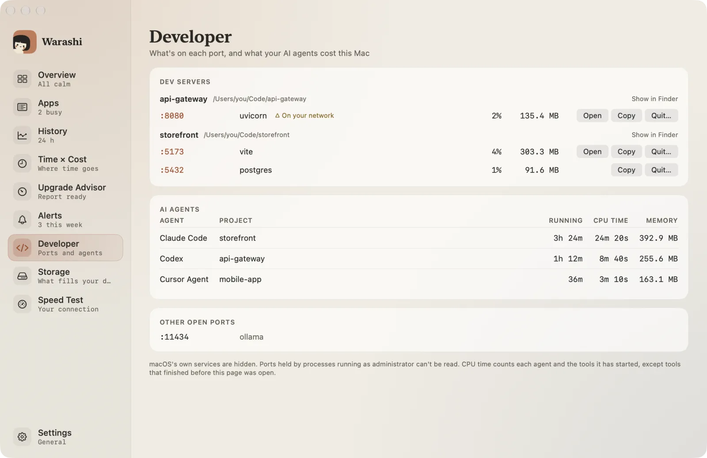
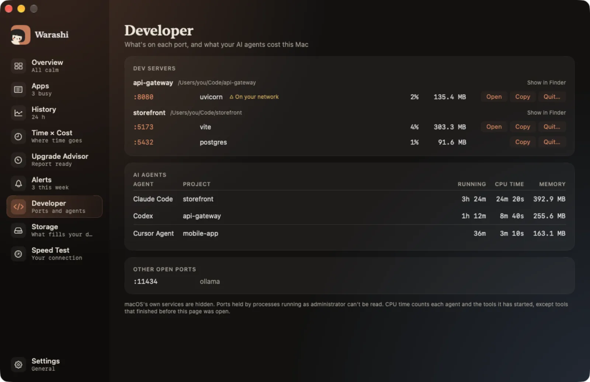

Wybierz Programista na pasku bocznym lub naciśnij ⌘7. Porty i agenci są odczytywani tylko wtedy, gdy ta strona jest na ekranie.


Serwery dev
Serwery są pogrupowane według folderu, z którego je uruchomiono, wraz z portami, CPU i pamięcią. Otwórz otwiera serwer w przeglądarce, Kopiuj kopiuje jego adres, a Zakończ… prosi go o zatrzymanie po Twoim potwierdzeniu. △ W Twojej sieci oznacza, że inne urządzenia w Twojej sieci mogą mieć do niego dostęp.
Agenci AI
Każda uruchomiona sesja Claude Code, Codex, Cursor Agent, Gemini CLI, Aider, OpenCode, Amp lub Goose, z projektem, czasem działania, czasem CPU i pamięcią. Narzędzia uruchomione przez agenta liczą się jako jego część.
Inne otwarte porty
Wszystko inne z otwartym portem, na przykład lokalny model AI. Usługi samego macOS są ukryte.
Gdy coś nie działa
- Brakuje portu: portów używanych przez procesy uruchomione jako administrator nie można odczytać.
- Brakuje agenta: agenci są rozpoznawani na podstawie listy znanych programów. Napisz na adam@warashi.app, którego używasz.
Więcej w sekcji Rozwiązywanie problemów lub napisz na adam@warashi.app.